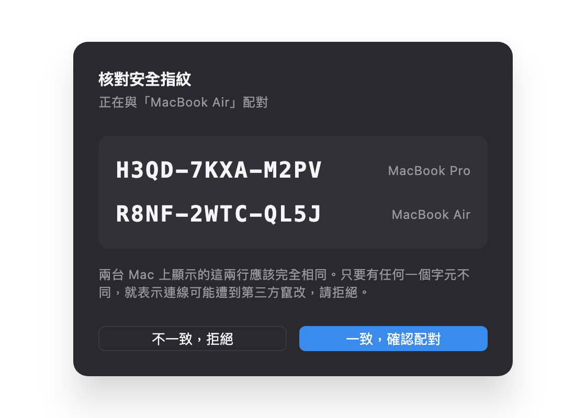
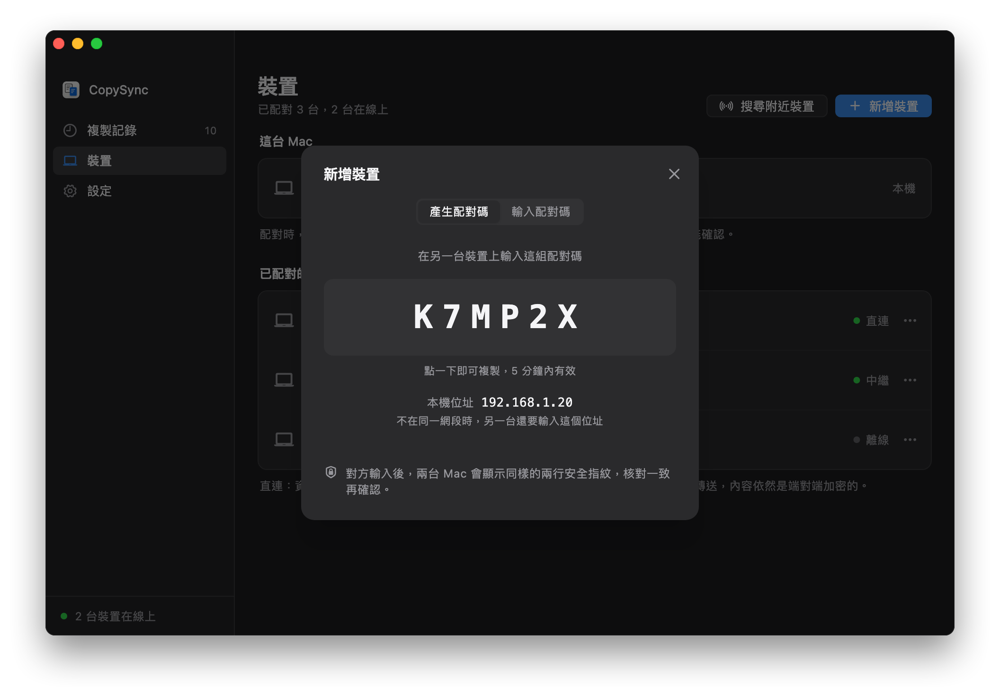
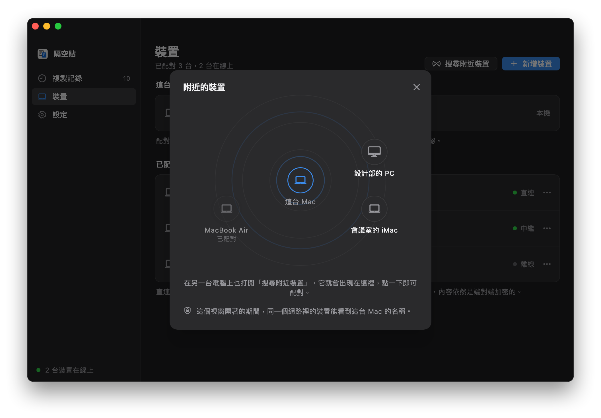
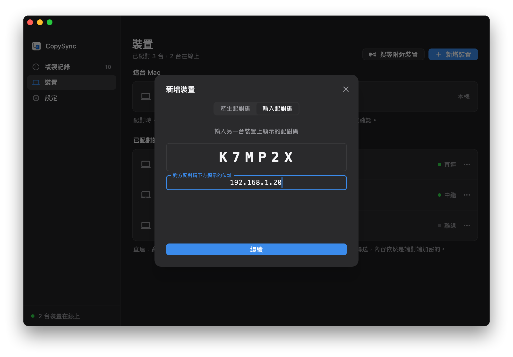

不需要伺服器
同一個網路裡的兩台電腦，靠 mDNS 互相發現、直接交換連線資訊，然後建立加密的直連。沒有伺服器，也不需要一台一直開著的電腦。
- 自動發現。每台電腦用 mDNS 在區域網路裡廣播自己，廣播裡只有一個每天都會變的匿名識別碼，看不出是誰的電腦。打開「搜尋附近裝置」時才會帶上裝置名稱，關掉就撤下。
- 直連。複製的內容在兩台電腦之間直接傳輸，速度就是區域網路的速度。
- 一樣安全。配對時核對兩行安全指紋，之後的每則訊息都帶有簽章，同一個網路裡的其他人冒充不了你的裝置。
開始之前
- 在同一個網路裡
- 兩台電腦連著同一台路由器就行，Wi‑Fi 與有線混用也可以。訪客網路、開了「AP 隔離」的 Wi‑Fi 不讓裝置互相連線；公司裡的有線和無線常常不在同一個網段，這時請看下面的不在同一網段。
- Windows 防火牆
- 第一次執行時，Windows 會詢問是否允許隔空貼通過防火牆，請選擇允許。如果按過取消，到隔空貼的「設定 → 區域網路」裡點「允許」，會要求一次系統管理員權限。
- macOS 的本機網路權限
- 從 macOS 15 起，第一次連線區域網路裡的裝置時，系統會詢問是否允許 PasteFerry Daemon 尋找區域網路上的裝置，請選擇允許。拒絕過的話，到「系統設定 → 隱私權與安全性 → 本機網路」裡開啟它。
- 不用填伺服器
- 「設定」裡的伺服器位址留空就行。以後要跨網路同步，再填上伺服器或改用 Tailscale，已經配對的裝置不用重新配對。
第 1 步
把兩台電腦配對
每兩台電腦之間配對一次。還沒裝 App 的話，先按照快速入門裝好。
- 在一台電腦上打開「裝置」，點「新增裝置」，會顯示一組 6 碼的配對碼，5 分鐘內有效。
- 在另一台電腦上同樣點「新增裝置」，切換到「輸入配對碼」，輸入它，再點「繼續」。
- 兩邊螢幕會顯示同樣的兩行安全指紋。逐字核對一致後，再點確認。之後複製就會同步。


不用配對碼：搜索附近設備
- 兩台電腦都打開「裝置」，點「搜尋附近裝置」。視窗開著的期間，同一個網路裡的裝置才看得到這台電腦的名稱。
- 對方出現在雷達上之後，點一下它。兩邊螢幕會顯示同樣的兩行安全指紋，核對一致後各自確認。
- 只在同一個網段裡有效。找不到對方時，改用上面的配對碼。

第 2 步
不在同一網段
區域網路探索只在一個網段裡有效。兩台電腦在不同網段、但網段之間互通時（公司裡很常見），配對時多輸入一個位址就行。
- 顯示配對碼的那台，在配對碼下方能看到本機的位址，例如
192.168.1.20。 - 輸入配對碼的那台，點「不在同一網段？」，填上這個位址，再點「繼續」。
- 配對之後，兩台會記住彼此的位址。其中一台換了位址時，只要另一台沒換，就會自動重新找到；兩台都換了的話，在「裝置」裡點那台裝置的「…」選單，選「輸入它的位址」。

兩個網段之間完全不通時（例如訪客網路與辦公網路隔開），只能經過一台兩邊都連得到的電腦中繼，見在區域網路裡架設伺服器。
常見問題
找不到另一台電腦？
先確認兩台連著同一個網路、都已啟用背景同步。再試試在輸入配對碼的那台填上對方的位址：這樣能找到的話，代表兩台不在同一個網段，或網路擋住了 mDNS。
還是找不到，就檢查對方的防火牆：對方是 Windows 的話，在它的「設定 → 區域網路」裡點「允許」；是 Mac 的話，確認「系統設定 → 隱私權與安全性 → 本機網路」裡已開啟 PasteFerry Daemon，系統防火牆也沒有擋住它。
位址變了怎麼辦？
一般不用管。在同一個網段裡靠 mDNS 隨時都能找到；在不同網段時，只要有一台的位址沒變，就能自動重新連上。兩台都換了位址時，在「裝置」裡幫那台裝置重新輸入一次位址。
長期放著不動的桌上型電腦，可以在路由器的「DHCP 靜態分配」裡幫它固定一個位址。
同一個網路裡的其他人會看到我的電腦嗎？
能看到網路裡有一台隔空貼，但看不出是誰的：廣播裡只有一個每天都會變的匿名識別碼，沒有裝置名稱，也沒有裝置 ID。只有在你打開「搜尋附近裝置」的那段時間，廣播裡才會帶上裝置名稱，關掉視窗就撤下。沒有和你配對過的裝置，傳來的訊息一律丟棄；配對還要兩邊核對安全指紋。
用了哪些連接埠？
UDP 8788 用來交換連線資訊（被佔用時改用一個隨機連接埠），mDNS 用 UDP 5353，連上之後的資料走另一個隨機的 UDP 連接埠。不需要在路由器上做任何設定。